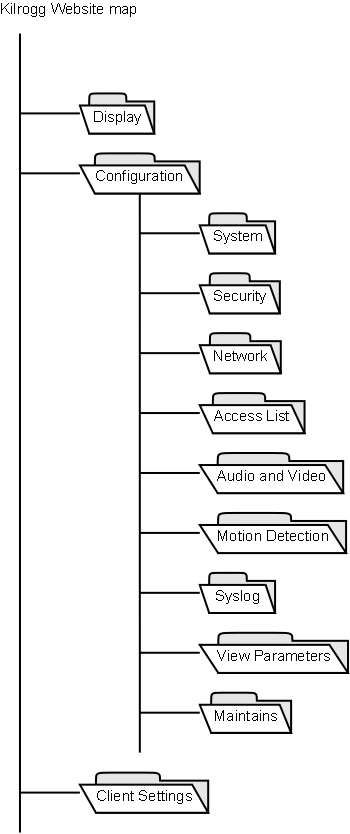
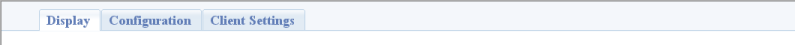
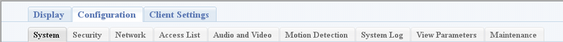

Kilrogg is a project of reference software for VN's SoCs.
The Kilrogg reference software provides a web configuration interface for all functions that
are most frequently used by the users.
The interface provide plug-in for Internet Explorer on Windows PC. For others, depends on browsers and OS
, the Quick time is used to connect MPEG-4 Audio/Video and HTTP push sever is used to browse Motion JPEG.
CGI
The CGIs are written in "lua" script language. "Lua" has higher performance than busybox
embedded "ash" shell.
AJAX
The AJAX (Asynchronous JavaScript and XML) technologies are used to speedup webpages
load times when submit user modified forms.
Site Map
The website map shows as below:

We list and briefly describe functions of each page at follows:
Display
Display live audio/video.
System
Settings for host name, system time and LED state.
Security
Settings for root password.
Network
Includes network connect method setting, HTTP sever and RTSP streaming server settings.
Access List
Set access IP list. There are two available list, allow list and denied list.
Audio and Video
Includes video and audio encoder type setting, encoder properties setting and front-end image setting.
Motion Detection
Settings for motion detection. Three windows selectable on plug-in. (IE only)
Syslog
Show current syslogs and set remote system log sever.
View parameters
View current system and application configurations.
Maintains
Reset system and update firmware through web interface.
Client Settings
Select which stream to connect, connection media type and connection protocol.
The page outlook is separated to two frame.
Top Frame
- The top frame shows the page tabs.
- Three main tabs are "Display", "Configuration" and "Client Setting".
- While selecting the "Configuration" tab, subtabs display, i.e. "System", "Security", "NetWork", etc.
- Sample view


Bottom Frame
- The bottom frame shows the function page according to selected tab at top frame.